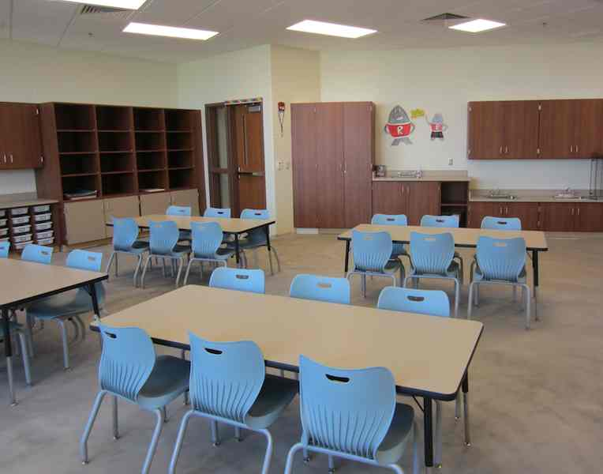
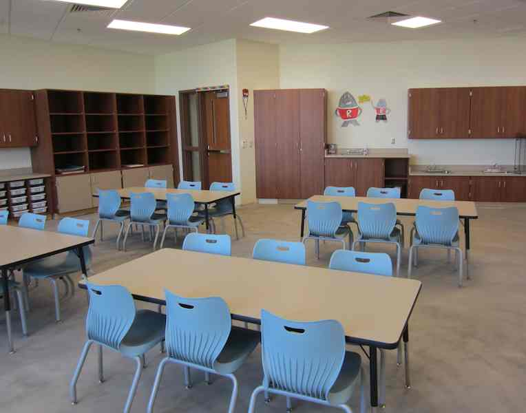

The Jasper County Economic Development Organization (JCEDO) released its annual report for 2011-2012 and sent me a copy. (I guess I am on their mailing list.) The JCEDO is a "public-private partnership incorporated in 1986 as a 501(c)(3) corporation." It purpose is to "Strengthen and diversify the local economy, attract quality jobs, and encourage entrepreneurial growth to create opportunities for Jasper County and it residents." The report is a pdf file, but is not currently available on the Internet. (I asked and was told that a new website is under development. When it is completed, future documents of this sort should be available on-line.)
The most interesting part of the document was a look at eleven successful projects that were recently completed or expected to be completed in the near future. In alphabetical order, they are:
The $108 million Advanced Auto Parts distribution center in Remington is now fully operational. It has 566,000 square feet of space.
The American Melt Blown & Filtration plant in Rensselaer is starting up. It will use 67.000 square feet of space in the old Schumacher building and has a projected employment of 40.
ConAgra Foods in Rensselaer relocated four popcorn packaging lines from Iowa in the Fall of 2011, which resulted in about 20 additional employees.
The Fair Oaks Compressed Natural Gas fueling station was completed in September 2011. It supplies the local dairy's truck fleet.
The trucking company How About That is constructing a new building north of Jasper Junction with completion expected this fall. It will be able to accommodate 40 employees.
Iroquois Bio-Energy Company at Pleasant Ridge (the ethanol plant) is construction a 775,000 bushel grain bin with completion scheduled this fall. The cost is $2 million.
The Legacy Farms/Pig Adventure in Fair Oaks is a $10 million, 143,000 square foot pig operation that will be connected with the Fair Oaks Adventure.
Sealy in Rensselaer has leased 32,000 of offsite warehouse space beginning Fall 2011 through Winter 2012.
Solae in Remington, a processor of soy protein concentrate power and soy lecithin oil food ingredients, is leasing 18,000 square feet of offsite warehouse space.
Terborg Distributing of Demotte constructed a new 13,000 square food headquarters/warehouse facility that opened in February 2012. The company is a beverage distributor.
Wilson Industrial Sales Company of Rensselaer is constructing a new 10,000 square foot corporate headquarters west of the I-65 SR 114 intersection. They are relocating from Newton County.
About half of these have been mentioned in previous posts and about half have not been.

This blog reports events and interesting tidbits from Rensselaer, Indiana and the surrounding area.
Friday, August 31, 2012
Thursday, August 30, 2012
Shopping the CDC Thrift Store in Monticello
Last week I was in Monticello and stopped by the CDC Thrift Store. This store is run by CDC Resources (the CDC stands for Comprehensive Development Centers), which also runs Jasper Junction north of Rensselaer. Both stores are meant to earn money to support the mission of CDC, which is to aid developmentally handicapped adults. In Rensselaer CDC houses adults in Jasper Village and has a center at the end of Angelica Street.
Monticello has a bunch of one-way streets, and the CDC Thrift Store is on one of them. To get there from US 24, which runs from west to east through Monticello, follow it until it turns north and then west again. The first stop light after the second turn is Illinois Street, the street on which the thrift shop is located. However, it is one way going the wrong way. Go to the next light and turn north on Main Street and follow it over the railroad tracks. Go a couple of blocks further north and then turn back to the east to get to Illinois. You will find the thrift shop on the west side of Illinois Street a bit north of the railroad tracks.
The store is bright and very clean looking. On one side is clothing.
Looking the other way you see all the other stuff, including furniture mixed in with the other items.
 Glassware and other kitchen stuff is neatly arranged on shelves.
Glassware and other kitchen stuff is neatly arranged on shelves.
 There was a selection of Halloween merchandise already up and ready to buy. I have not noticed the Halloween stuff in local stores, but I have not been paying much attention.
There was a selection of Halloween merchandise already up and ready to buy. I have not noticed the Halloween stuff in local stores, but I have not been paying much attention.
 Like Jasper Junction, the Thrift Store has a small eating area.
Like Jasper Junction, the Thrift Store has a small eating area.
 The kids' stuff is in its own little area. Last time I was left with grand kids in a thrift store, they told me to quit looking at the stuff I thought interesting: "Quit wasting time, grandpa. We need to get to the toys."
The kids' stuff is in its own little area. Last time I was left with grand kids in a thrift store, they told me to quit looking at the stuff I thought interesting: "Quit wasting time, grandpa. We need to get to the toys."
 The CDC Thrift Store has a very different feel than Jasper Junction. It is brighter, more inviting, and more upscale. It does not have vendor booths. It lacks the mystery of the "Man Building" and the Furniture Annex. If you have a chance, check it out. You never know what you can find in a thrift store.
The CDC Thrift Store has a very different feel than Jasper Junction. It is brighter, more inviting, and more upscale. It does not have vendor booths. It lacks the mystery of the "Man Building" and the Furniture Annex. If you have a chance, check it out. You never know what you can find in a thrift store.
(Some people have noticed "For Sale" signs at Jasper Junction. CDC does not want to close Jasper Junction; it wants to move it into Rensselaer. The first step is to sell the building they are in.)
We exited Monticello going north. On the way out, we passed something that Rensselaer and most other small cities in the United States lack, and outdoor movie theater.
Monticello and Rensselaer are both about the same size, but they are very different communities.
Update: CDC Resources is on Facebook and you can find notices of specials at both Jasper Junction and the Thrift Store there.
Monticello has a bunch of one-way streets, and the CDC Thrift Store is on one of them. To get there from US 24, which runs from west to east through Monticello, follow it until it turns north and then west again. The first stop light after the second turn is Illinois Street, the street on which the thrift shop is located. However, it is one way going the wrong way. Go to the next light and turn north on Main Street and follow it over the railroad tracks. Go a couple of blocks further north and then turn back to the east to get to Illinois. You will find the thrift shop on the west side of Illinois Street a bit north of the railroad tracks.
The store is bright and very clean looking. On one side is clothing.
Looking the other way you see all the other stuff, including furniture mixed in with the other items.
(Some people have noticed "For Sale" signs at Jasper Junction. CDC does not want to close Jasper Junction; it wants to move it into Rensselaer. The first step is to sell the building they are in.)
We exited Monticello going north. On the way out, we passed something that Rensselaer and most other small cities in the United States lack, and outdoor movie theater.
Monticello and Rensselaer are both about the same size, but they are very different communities.
Update: CDC Resources is on Facebook and you can find notices of specials at both Jasper Junction and the Thrift Store there.
Wednesday, August 29, 2012
Art Show August 2012
The current exhibit at the Fendig Gallery features images that probably seem pretty familiar to people in this area, such as this one, titled "Store and Storage 1".
 Or the one below, titled, "Crossing the Kankakee."
Or the one below, titled, "Crossing the Kankakee."
They look a lot like old postcards, but they are not photographs. They are drawings by Lynn Retson, who lives in Porter, Indiana, which is near the Indiana Dunes. She says that her goal is to search out the poetry in the ordinary. She works in graphite and pastel, or pencil and chalk, and does some amazing things with these simple media.
She had a number of cloud pictures, such as the one below, titled "Coming Rain."
My pictures of her work do not do them justice. You should notice that I am getting a lot of reflection. When you seem them in person, your brain does a good job of ignoring those reflections.
The reception for the exhibit was on Friday night and featured a harpist. The show runs until September 28, 2012.
The hours of the Fendig Gallery seem to have changed. The sign in front now says M-F 2:00-4:00.
They look a lot like old postcards, but they are not photographs. They are drawings by Lynn Retson, who lives in Porter, Indiana, which is near the Indiana Dunes. She says that her goal is to search out the poetry in the ordinary. She works in graphite and pastel, or pencil and chalk, and does some amazing things with these simple media.
She had a number of cloud pictures, such as the one below, titled "Coming Rain."
My pictures of her work do not do them justice. You should notice that I am getting a lot of reflection. When you seem them in person, your brain does a good job of ignoring those reflections.
The reception for the exhibit was on Friday night and featured a harpist. The show runs until September 28, 2012.
The hours of the Fendig Gallery seem to have changed. The sign in front now says M-F 2:00-4:00.
Tuesday, August 28, 2012
Historical news-updated
Earlier this year the area of the downtown around the Court House Square was designated a historic district by the National Register of Historic Places. A sign is now in place to proclaim that designation. I cannot find the district listed on the Interior Department's website, but it may eventually get there.
The main building in the district is the Jasper County Court House, which this morning was having new slate tiles placed on the roof.
 While on the topic of historic news, the Jasper County Historical Museum has a number of old garments on display, including several WWI uniforms. Below is a pair of pants from WWI once worn by E. S. Swartz
While on the topic of historic news, the Jasper County Historical Museum has a number of old garments on display, including several WWI uniforms. Below is a pair of pants from WWI once worn by E. S. Swartz
 There is also an army uniform from Edwin Rhoads.
There is also an army uniform from Edwin Rhoads.
And for those who want to make love not war, the museum has the bridal dress that Blanche White wore when she married Charles Halleck on June 15, 1927.
 In other historic news, a small problem, about two inches of a problem, has delayed the laying of the I-beams on the old Bowstring Bridge. If you look carefully at the last picture in this post, you may be able to see the problem. The I-beams were not supposed to touch the bridge, but they did because not all the cross beams were the same height.
In other historic news, a small problem, about two inches of a problem, has delayed the laying of the I-beams on the old Bowstring Bridge. If you look carefully at the last picture in this post, you may be able to see the problem. The I-beams were not supposed to touch the bridge, but they did because not all the cross beams were the same height.
Update Wednesday, Aug 29
The Rensselaer Central High School Band performed at the Tuesday Nite Farmers' Market last night. I think it is the last of the entertainments for the Farmers' Markets. I had a prior engagement for the evening, so could not wait around and hear them play.
Speaking of bands, South Newton High School has a new band director this year, a 2012 grad from SJC. The prior band director, who did a good job of rebuilding the band and often brought it to Rensselaer parades, has taken a job at a church in Georgia. He will be missed not only by the South Newton community, but by many people in Rensselaer. His move probably means that the Fendig Summer Theater will need a new director next summer, as his wife directed Suessical.
This morning I stopped by the Court House because I saw the workers sending slate tiles up to the roof. I talked to the worker on the ground, noting that I had never before seen a slate roof installed. He commented that I probably would never see another one. The roof is guaranteed for a hundred years, but should last longer than that.
Below you can see the lift going up with a load of slate. There is a second lift that runs along the stairs--it the shiny metal thing. It is used when things need to be taken to the various levels.
Blackboards used to be made of slate, though I have not seen any lately. Maybe next year for one of Tuesday Nite Farmers' Markets the organizers can hire a crane, attach kids onto the wire, give them some chalk, and hoist them up to let the decorate the Court House Roof. Now that would be something.
The main building in the district is the Jasper County Court House, which this morning was having new slate tiles placed on the roof.
And for those who want to make love not war, the museum has the bridal dress that Blanche White wore when she married Charles Halleck on June 15, 1927.
Update Wednesday, Aug 29
The Rensselaer Central High School Band performed at the Tuesday Nite Farmers' Market last night. I think it is the last of the entertainments for the Farmers' Markets. I had a prior engagement for the evening, so could not wait around and hear them play.
Speaking of bands, South Newton High School has a new band director this year, a 2012 grad from SJC. The prior band director, who did a good job of rebuilding the band and often brought it to Rensselaer parades, has taken a job at a church in Georgia. He will be missed not only by the South Newton community, but by many people in Rensselaer. His move probably means that the Fendig Summer Theater will need a new director next summer, as his wife directed Suessical.
This morning I stopped by the Court House because I saw the workers sending slate tiles up to the roof. I talked to the worker on the ground, noting that I had never before seen a slate roof installed. He commented that I probably would never see another one. The roof is guaranteed for a hundred years, but should last longer than that.
Below you can see the lift going up with a load of slate. There is a second lift that runs along the stairs--it the shiny metal thing. It is used when things need to be taken to the various levels.
Blackboards used to be made of slate, though I have not seen any lately. Maybe next year for one of Tuesday Nite Farmers' Markets the organizers can hire a crane, attach kids onto the wire, give them some chalk, and hoist them up to let the decorate the Court House Roof. Now that would be something.
Monday, August 27, 2012
Lifting the bridge
The bowstring arch bridge was lifted into place this morning to the delight of about a dozen onlookers. Below a worker is attaching the bridge to the crane. The metal thingy above the bridge was used so the bridge could be attached in four places, giving it stability during the lift.
 After the bridge was attached, there was a long wait, and then suddenly it was time for the lift.
After the bridge was attached, there was a long wait, and then suddenly it was time for the lift.
 Most of the people watching were on the north side, so I went to watch from that angle, thinking that they might have figured out the better viewing point.
Most of the people watching were on the north side, so I went to watch from that angle, thinking that they might have figured out the better viewing point.


Update 2: The beam did not stay, but was removed. Late this afternoon the painters were back doing more touch up.
The bridge was carefully lowered onto metal footings and then a long process of adjustment too place.
Most of the people watching were on the north side, so I went to watch from that angle, thinking that they might have figured out the better viewing point.
Finally they seemed to be satisfied with how the bridge was fitting.

They loosened the straps and the bridge was on its own. Further work needs to be done to get it anchored, and then the I-beams will be put into place. You can see the step on which the I-beams will rest in the picture above.
The planking has arrived--it is four-by-fours. I am not sure when it will be installed.
I discovered in talking to people who were watching the bridge that this is the third location for this bridge. Laird's Landing is not where the bridge was initially installed, but I got conflicting stories about where it was originally. It was installed on a road, but when the road was changed or a new bridge was built, this bridge became surplus and was bought by the Laird family and installed north of Laird's Landing. That is why a bridge that looked far too big for foot traffic ended up at that location.
I also learned that there was a fair amount of damage that had to be repaired before the bridge came back to Rensselaer. That makes sense--it is a very old bridge that has been out in the elements for a very long time.
Below is a picture of the bridge looking upriver. It will not look like this very long. After the deck and the railings are added, it will look considerably different.
I discovered in talking to people who were watching the bridge that this is the third location for this bridge. Laird's Landing is not where the bridge was initially installed, but I got conflicting stories about where it was originally. It was installed on a road, but when the road was changed or a new bridge was built, this bridge became surplus and was bought by the Laird family and installed north of Laird's Landing. That is why a bridge that looked far too big for foot traffic ended up at that location.
I also learned that there was a fair amount of damage that had to be repaired before the bridge came back to Rensselaer. That makes sense--it is a very old bridge that has been out in the elements for a very long time.
Below is a picture of the bridge looking upriver. It will not look like this very long. After the deck and the railings are added, it will look considerably different.
I am trying to upload a video that I will add if I can get it onto YouTube successfully.
Update: The bridge and park improvements are funded by a Transportation Enhancement grant of roughly a million dollars from the federal government that is administered by the Indiana State Department of Transportation.
The first I-beam was placed early this afternoon.
 This should be the video:
This should be the video:
Update: The bridge and park improvements are funded by a Transportation Enhancement grant of roughly a million dollars from the federal government that is administered by the Indiana State Department of Transportation.
The first I-beam was placed early this afternoon.
Update 2: The beam did not stay, but was removed. Late this afternoon the painters were back doing more touch up.
Coyotes or dogs?
A week ago a reader sent me an e-mail about something strange at Donaldson's. If I had read the e-mail earlier, I would have included a picture like the one below in one of last week's posts.
My correspondent said there were three of these decoys or scare-dogs, but I only saw two. A person who lives nearby said they were quite effective in keeping the geese away for about two weeks, but now the geese are starting to figure out that they are not a real threat. (There is a pond to the left of the picture.)
I do not check my rensselaer adventure address every day. If you want me to respond quickly, send the e-mail, and then put a comment on any post telling me to check my e-mail. (I get notified in an e-mail account that I do read daily about all comments, and as blog administrator I can delete any that I want to delete. I would delete any of the read-your-email comments as soon as I read the e-mail.)
that I finally got around to reading
My correspondent said there were three of these decoys or scare-dogs, but I only saw two. A person who lives nearby said they were quite effective in keeping the geese away for about two weeks, but now the geese are starting to figure out that they are not a real threat. (There is a pond to the left of the picture.)
I do not check my rensselaer adventure address every day. If you want me to respond quickly, send the e-mail, and then put a comment on any post telling me to check my e-mail. (I get notified in an e-mail account that I do read daily about all comments, and as blog administrator I can delete any that I want to delete. I would delete any of the read-your-email comments as soon as I read the e-mail.)
that I finally got around to reading
Saturday, August 25, 2012
Tiny ponies
A couple days ago the Rensselaer Republican had a piece about a Miniature Horse Registry licensed horse show that would be at the Jasper County Fairgrounds today. I decided it would be a good destination for a morning bike ride. I have never seen a miniature horse show, and I needed to cross that off my bucket list.
It seemed to work much like the livestock judging that goes on during the county fair, though I only stayed for a short bit of it. There were horses of various sizes, including quite a few that were big enough so that a small person could ride them. (I do not have any pictures of them.)
I was more intrigued by the very small horse. Below are the two smallest that I saw--quite a few dogs are bigger than these.
What is the point of such tiny horses?
It seemed to work much like the livestock judging that goes on during the county fair, though I only stayed for a short bit of it. There were horses of various sizes, including quite a few that were big enough so that a small person could ride them. (I do not have any pictures of them.)
I was more intrigued by the very small horse. Below are the two smallest that I saw--quite a few dogs are bigger than these.
What is the point of such tiny horses?
Friday, August 24, 2012
A Bomber red bridge
This morning the painters were putting on the third coat of paint on the bowstring arch bridge. This top coat is a bright red.
 The first coat was a primer and was gray. The second coat was a very expensive epoxy coat and was also gray.
The first coat was a primer and was gray. The second coat was a very expensive epoxy coat and was also gray.
One of the painters was using a roller to finish the I-beams.
 Plans are to set the bridge Monday morning. We will see if the plans work out.
Plans are to set the bridge Monday morning. We will see if the plans work out.
One of the painters was using a roller to finish the I-beams.
Thursday, August 23, 2012
Inside the new primary school
After watching the progress on the outside of the new primary school for over a year, today the people of Rensselaer finally got a chance to see what was inside. The ribbon cutting ceremony began at 3:00 with mention of many people who had contributed to the new school. A large crowd was on hand, though I think most of them were not all that interested in the ribbon cutting. They just wanted to see what was inside.
Above you can see a small playground near the main entrance. The surface is some kind of rubber. It has a lot of give, so if a kid falls, he will not hit a hard surface.
The main entrance, shown above, faces the east. As you enter the school, the office area is on your left. There were maps available on benches in the entrance way, and they were very useful in figuring out were things were. There were no organized tours when I was there--it was explore at your own pace.
At the end of the entry way is the cafeteria and behind it is the gym. It appeared as if the floor had not yet been installed. In fact, there still is some finishing work to do, including laying some tile, and it will be done when the students are not in class.
Below is the cafeteria area. To the right the doors lead back to the main entrance. Exiting the door on the left, as the man is doing, leads to the west wing of the building.
The first room on the west wing is the art room. It was very clean. It will probably never look like this again. 
Continuing down the west wing, you come to 13 classrooms, all for first or second grades. Here is one of the first grade classrooms.
 Each of the classrooms is arranged a bit differently beyond the different decorating that the teachers do. Students were encouraged to come and meet their teachers, and we saw several doing that. Each classroom had a list of the students who would be in that class come Monday.
Each of the classrooms is arranged a bit differently beyond the different decorating that the teachers do. Students were encouraged to come and meet their teachers, and we saw several doing that. Each classroom had a list of the students who would be in that class come Monday.
 None of the classrooms had the traditional school desks. Tables are in. Also, note the smart board on the wall. A projector projects the image from the teachers computer (or other visual source) onto the board.
None of the classrooms had the traditional school desks. Tables are in. Also, note the smart board on the wall. A projector projects the image from the teachers computer (or other visual source) onto the board.
Below is the hallway from the west end of the hallway. Notice how the teachers have put the names of their students onto the doors.
 Walking back to the east, you come to the central area between wings, where the art room is. Also in that area is the library, which still has an empty look to it.
Walking back to the east, you come to the central area between wings, where the art room is. Also in that area is the library, which still has an empty look to it.
 Rounding the corner you come to the lavatory section of the east wing. Lots of ceramic tile in this area.
Rounding the corner you come to the lavatory section of the east wing. Lots of ceramic tile in this area.
 Where the hallway turns again is the music room. It occupies the same position for the east wing that the art room occupies for the west wing. It was all ready for a game of musical chairs.
Where the hallway turns again is the music room. It occupies the same position for the east wing that the art room occupies for the west wing. It was all ready for a game of musical chairs.
The first room in the east wing is a computer lab.
 The Kindergarden and pre-school classrooms are considerably larger than the classrooms for first and second grades. They also have a door that leads to the outside.
The Kindergarden and pre-school classrooms are considerably larger than the classrooms for first and second grades. They also have a door that leads to the outside.
 Halfway down the hallway is an area where there are nooks for tutoring. Students who need special help can be taken out of the classroom and given individualized attention.
Halfway down the hallway is an area where there are nooks for tutoring. Students who need special help can be taken out of the classroom and given individualized attention.
 Here is another Kindergarten room.
Here is another Kindergarten room.
 Returning to the cafeteria, I had a cookie and then set out to explore the hallways in the office area that my map showed. Below is a picture of part of the kitchen.
Returning to the cafeteria, I had a cookie and then set out to explore the hallways in the office area that my map showed. Below is a picture of part of the kitchen.
The office area has a bunch of small rooms. Some of them are offices.
 There is a room for speech therapy and a conference room.
There is a room for speech therapy and a conference room.
 The most interesting room in this area is the Time Out room (That is what the plaque by the door called it.) If a student wants his or her own desk, this is a place where he or she can get it.
The most interesting room in this area is the Time Out room (That is what the plaque by the door called it.) If a student wants his or her own desk, this is a place where he or she can get it.
 It was time to go. I took a picture of the skylight in the main entrance because I had long wondered what the purpose of those funny structures on the roof was.
It was time to go. I took a picture of the skylight in the main entrance because I had long wondered what the purpose of those funny structures on the roof was.
 Before I left I took a quick trip around the building--there is a sidewalk that runs behind the building. The feature that will be the favorite of the students is the playground on the north side. In fact, a third grader I know was mightily impressed with it--too bad she will be in Van.
Before I left I took a quick trip around the building--there is a sidewalk that runs behind the building. The feature that will be the favorite of the students is the playground on the north side. In fact, a third grader I know was mightily impressed with it--too bad she will be in Van.
 If you could not make it to the open house, I hope these pictures and these descriptions give you some idea of what the new school is like.
If you could not make it to the open house, I hope these pictures and these descriptions give you some idea of what the new school is like.
Update: The Rensselaer Republican had a picture of the ribbon cutting in its August 27, 2012 issue and gave the price tag as $15.5 million.
Above you can see a small playground near the main entrance. The surface is some kind of rubber. It has a lot of give, so if a kid falls, he will not hit a hard surface.
The main entrance, shown above, faces the east. As you enter the school, the office area is on your left. There were maps available on benches in the entrance way, and they were very useful in figuring out were things were. There were no organized tours when I was there--it was explore at your own pace.
At the end of the entry way is the cafeteria and behind it is the gym. It appeared as if the floor had not yet been installed. In fact, there still is some finishing work to do, including laying some tile, and it will be done when the students are not in class.
Below is the cafeteria area. To the right the doors lead back to the main entrance. Exiting the door on the left, as the man is doing, leads to the west wing of the building.
The first room on the west wing is the art room. It was very clean. It will probably never look like this again. 
Continuing down the west wing, you come to 13 classrooms, all for first or second grades. Here is one of the first grade classrooms.
Below is the hallway from the west end of the hallway. Notice how the teachers have put the names of their students onto the doors.
The first room in the east wing is a computer lab.
The office area has a bunch of small rooms. Some of them are offices.
Update: The Rensselaer Republican had a picture of the ribbon cutting in its August 27, 2012 issue and gave the price tag as $15.5 million.
Subscribe to:
Posts (Atom)


{kind=link}
{kind=link}
{kind=link}
{kind=link}
{kind=link}
{kind=link}
{kind=link}
{kind=link}
{kind=link}
{kind=link}
{kind=link}
{kind=link}
{kind=link}
{kind=link}
{kind=link}
{kind=link}
{kind=link}
{kind=link}
{kind=link}
{kind=link}
{kind=link}